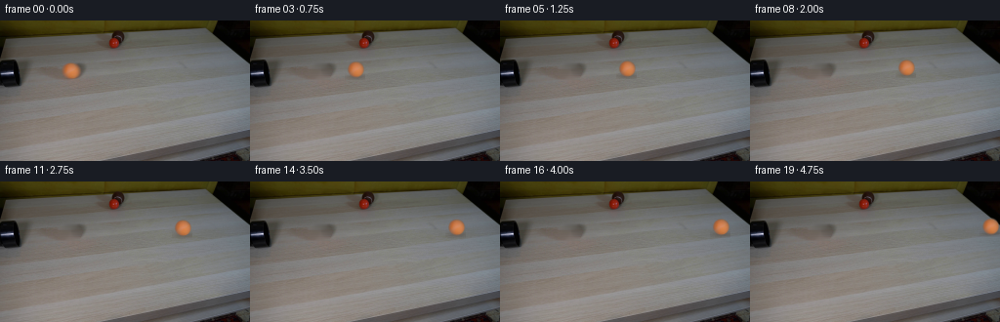
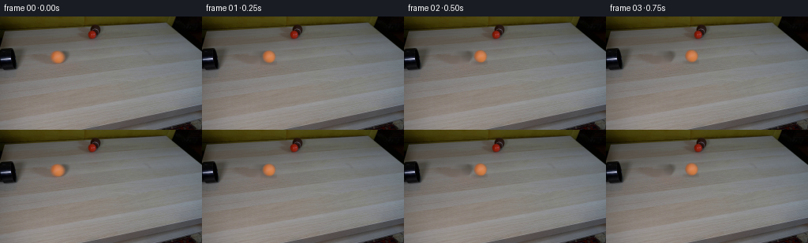

← 本轮 smoke 总览traex/DeepSeek-V4.1-Flash · 0010
vision-agent · 256×144 · 4.0 FPS · 20 帧 · 状态 running · 输出 tokens None
原始任务Static locked-off single-shot with fixed frame throughout filmed with constant framerate in real-time. The scene shows a realistic scientific demonstration. The scene only contains the described setup and actions. A light-colored wooden coffee table with a few small objects on it, including a brown tennis ball and a smaller red ball. The orange tennis ball rolls straight out of the black pipe over the entire table towards the right side.
当前保存结果
此结果可播放，但该运行尚未通过最终提交审核。页面展示不代表评测通过。
已保存候选与代码修改
这里按时间展示外部捕获的候选，每份均可单独播放。保存新版本不等于完成视觉检查；下方工具证据记录实际看过的图。
候选 01 · 2026-11-08T19:32:47.443549+00:00 · 点开播放与检查图
inspection.png

transition_check.png

代码变化
--- 上一保存版本
+++ 本次保存版本
@@ -0,0 +1,153 @@
+from pathlib import Path
+
+import cv2
+import numpy as np
+from PIL import Image
+
+import artifact_io
+
+
+CASE_DIR = Path(__file__).resolve().parent
+N_FRAMES = 20
+FPS = 4
+
+
+def smooth_circle_mask(size, radius, softness=0.8):
+ yy, xx = np.mgrid[:size, :size].astype(np.float32)
+ center = (size - 1.0) / 2.0
+ distance = np.hypot(xx - center, yy - center)
+ alpha = np.clip((radius + softness * 0.5 - distance) / softness, 0.0, 1.0)
+ return alpha.astype(np.float32)
+
+
+def make_clean_plate(frame):
+ """Remove the orange ball while retaining the horizontal wood grain."""
+ plate = frame.copy()
+ yy, xx = np.mgrid[: frame.shape[0], : frame.shape[1]]
+
+ # Include the original ball and its tiny contact shadow, but no table edge.
+ ball_area = ((xx - 71.7) / 9.4) ** 2 + ((yy - 51.2) / 9.8) ** 2 <= 1.0
+ shadow_area = ((xx - 71.8) / 7.5) ** 2 + ((yy - 59.7) / 2.2) ** 2 <= 1.0
+ repair_mask = ball_area | shadow_area
+
+ # Wood grain runs almost horizontally here. Interpolating each row from the
+ # unobstructed pixels on either side avoids the smearing of generic inpaint.
+ for y in range(40, 64):
+ xs = np.flatnonzero(repair_mask[y])
+ if not len(xs):
+ continue
+ left = max(0, int(xs.min()) - 3)
+ right = min(frame.shape[1] - 1, int(xs.max()) + 3)
+ while left > 0 and repair_mask[y, left]:
+ left -= 1
+ while right < frame.shape[1] - 1 and repair_mask[y, right]:
+ right += 1
+ t = (np.arange(left, right + 1) - left) / max(1, right - left)
+ for channel in range(3):
+ plate[y, left : right + 1, channel] = np.rint(
+ frame[y, left, channel] * (1.0 - t) + frame[y, right, channel] * t
+ ).astype(np.uint8)
+
+ # A restrained Telea pass smooths the repaired silhouette without erasing
+ # the wood's fine horizontal texture.
+ feather_mask = cv2.dilate(repair_mask.astype(np.uint8), np.ones((3, 3), np.uint8), iterations=1)
+ repaired = cv2.inpaint(plate, feather_mask, 1.4, cv2.INPAINT_TELEA)
+ blend = cv2.GaussianBlur(feather_mask.astype(np.float32), (0, 0), 0.7)
+ blend = np.clip(blend * 0.35, 0.0, 1.0)[..., None]
+ plate = np.rint(plate * (1.0 - blend) + repaired * blend).astype(np.uint8)
+ return plate
+
+
+def extract_ball(frame):
+ """Lift the original ball into an antialiased RGBA sprite."""
+ size = 19
+ cx, cy = 71.6, 51.1
+ left = int(round(cx - (size - 1) / 2.0))
+ top = int(round(cy - (size - 1) / 2.0))
+ patch = frame[top : top + size, left : left + size].astype(np.float32)
+ alpha = smooth_circle_mask(size, 8.2, 1.0)
+ rgba = np.dstack([patch, alpha * 255.0]).astype(np.uint8)
+ return rgba, (cx - left, cy - top)
+
+
+def add_contact_shadow(image, cx, cy):
+ """Composite a soft, shallow shadow beneath the sphere."""
+ h, w = image.shape[:2]
+ x0, x1 = max(0, int(cx - 10)), min(w, int(cx + 11))
+ y0, y1 = max(0, int(cy + 4)), min(h, int(cy + 12))
+ if x0 >= x1 or y0 >= y1:
+ return
+ yy, xx = np.mgrid[y0:y1, x0:x1].astype(np.float32)
+ sx = 7.8
+ sy = 2.0
+ shadow = np.exp(-0.5 * (((xx - (cx + 0.9)) / sx) ** 2 + ((yy - (cy + 7.7)) / sy) ** 2))
+ shadow *= 0.30
+ region = image[y0:y1, x0:x1].astype(np.float32)
+ tint = np.array([70.0, 52.0, 39.0], dtype=np.float32)
+ region[:] = region * (1.0 - shadow[..., None]) + tint * shadow[..., None]
+ image[y0:y1, x0:x1] = np.clip(np.rint(region), 0, 255).astype(np.uint8)
+
+
+def composite_sprite(image, sprite, source_center, cx, cy):
+ """Bilinearly place an RGBA sprite at a subpixel center."""
+ h, w = image.shape[:2]
+ sh, sw = sprite.shape[:2]
+ scx, scy = source_center
+ x0 = int(np.floor(cx - scx)) - 1
+ y0 = int(np.floor(cy - scy)) - 1
+ x1 = int(np.ceil(cx - scx + sw)) + 1
+ y1 = int(np.ceil(cy - scy + sh)) + 1
+ tx0, ty0 = max(0, x0), max(0, y0)
+ tx1, ty1 = min(w, x1), min(h, y1)
+ if tx0 >= tx1 or ty0 >= ty1:
+ return
+
+ map_x = (np.arange(tx0, tx1, dtype=np.float32) - (cx - scx)).astype(np.float32)
+ map_y = (np.arange(ty0, ty1, dtype=np.float32) - (cy - scy)).astype(np.float32)
+ grid_x, grid_y = np.meshgrid(map_x, map_y)
+ warped = cv2.remap(
+ sprite,
+ grid_x,
+ grid_y,
+ interpolation=cv2.INTER_LINEAR,
+ borderMode=cv2.BORDER_CONSTANT,
+ borderValue=(0, 0, 0, 0),
+ )
+ rgb = warped[..., :3].astype(np.float32)
+ alpha = (warped[..., 3:4].astype(np.float32) / 255.0)
+ base = image[ty0:ty1, tx0:tx1].astype(np.float32)
+ image[ty0:ty1, tx0:tx1] = np.clip(np.rint(base * (1.0 - alpha) + rgb * alpha), 0, 255).astype(np.uint8)
+
+
+def generate_frames():
+ first = np.asarray(Image.open(CASE_DIR / "first_frame.png").convert("RGB"))
+ plate = make_clean_plate(first)
+ sprite, source_center = extract_ball(first)
+
+ frames = []
+ for index in range(N_FRAMES):
+ if index == 0:
+ frames.append(first.copy())
+ continue
+
+ frame = plate.copy()
+ t = index / FPS
+
+ # Low rolling friction on a smooth table: about 175 px in five seconds.
+ velocity = 50.5
+ drag_time = 7.0
+ travel = velocity * drag_time * (1.0 - np.exp(-t / drag_time))
+ cx = 71.6 + travel
+ cy = 51.1 - 0.041 * travel + 0.000055 * travel * travel
+
+ add_contact_shadow(frame, cx, cy)
+ composite_sprite(frame, sprite, source_center, cx, cy)
+ frames.append(frame)
+
+ return np.stack(frames)
+
+
+if __name__ == "__main__":
+ frames = generate_frames()
+ artifact_io.save(frames, CASE_DIR)
+ print(f"saved {len(frames)} frames to {CASE_DIR}")
可观测工具行为
命令 1 · 2026-11-08T19:30:53.279376+00:00/bin/bash -c "pwd && rg --files -g '"'!*.git*'"' | sed -n '1,120p'"
exit 0 命令 2 · 2026-11-08T19:30:53.393450+00:00/bin/bash -c 'cat prompt.txt'
exit 0 命令 3 · 2026-11-08T19:30:53.738856+00:00/bin/bash -c 'cat GENERATION_RULES.md'
exit 0 命令 4 · 2026-11-08T19:30:53.953477+00:00/bin/bash -c 'file first_frame.png && identify first_frame.png 2>/dev/null || true && ls -la'
exit 0 命令 5 · 2026-11-08T19:31:01.708807+00:00/bin/bash -c "sed -n '1,260p' artifact_io.py"
exit 0 命令 6 · 2026-11-08T19:31:01.906514+00:00/bin/bash -c "sed -n '1,260p' player_template.html"
exit 0 命令 7 · 2026-11-08T19:31:02.202511+00:00/bin/bash -c "python - <<'PY'
from PIL import Image
im=Image.open('first_frame.png')
print(im.size, im.mode)
PY"exit 0 命令 8 · 2026-11-08T19:31:19.629279+00:00/bin/bash -c "python - <<'PY'
from PIL import Image
im=Image.open('first_frame.png')
im.crop((0,0,160,100)).resize((960,600)).save('.tmp/crop.png')
PY"exit 0 命令 9 · 2026-11-08T19:31:35.775663+00:00/bin/bash -c "python - <<'PY'
from PIL import Image
im=Image.open('first_frame.png')
im.crop((40,20,100,85)).resize((600,650), Image.Resampling.NEAREST).save('.tmp/ball_initial.png')
im.crop((90,0,150,50)).resize((600,500), Image.Resampling.NEAREST).save('.tmp/ball_red.png')
PY"exit 0 命令 10 · 2026-11-08T19:31:51.932283+00:00/bin/bash -c "python - <<'PY'
mods=['numpy','PIL','cv2','scipy','skimage']
for m in mods:
try:
mod=__import__(m); print(m, getattr(mod,'__version__','ok'))
except Exception as e: print(m, 'NO', e)
PY"
exit 0 命令 11 · 2026-11-08T19:31:56.650237+00:00/bin/bash -c "python - <<'PY'
from PIL import Image
import numpy as np
im=np.array(Image.open('first_frame.png'))
# scan for orange pixels: R>G etc
r,g,b=[im[:,:,i].astype(int) for i in range(3)]
m=(r>120)&(r>g*1.2)&(g>b*1.1)
y,x=np.where(m)
print('orange bbox',x.min(),y.min(),x.max(),y.max(), 'n',len(x))
# groups simple by x
for lo,hi in [(0,80),(80,130),(130,256)]:
mm=m.copy(); mm[:,:lo]=False; mm[:,hi:]=False
y,x=np.where(mm)
if len(x): print(lo,hi, x.min(),y.min(),x.max(),y.max(),len(x))
PY"exit 0 命令 12 · 2026-11-08T19:32:46.081988+00:00/bin/bash -c 'python generate.py'
exit 0 命令 13 · 2026-11-08T19:32:58.051894+00:00/bin/bash -c "python - <<'PY'
from PIL import Image
for i in [0,1,2,5,10,15,19]:
im=Image.open(f'frames/{i:02d}.png')
im.crop((max(0, min(150, (70+int(i*9.2))-20)),25,min(256,max(70,70+int(i*9.2)+35)),75)).resize((660,600), Image.Resampling.NEAREST).save(f'.tmp/f{i:02d}_zoom.png')
PY"exit 0 命令 14 · 2026-11-08T19:33:11.540308+00:00/bin/bash -c "python - <<'PY'
from PIL import Image
import numpy as np
im=np.array(Image.open('first_frame.png'))
# print RGB values on ball and immediate right edge
for y in range(42,61,2):
print(y, [tuple(im[y,x]) for x in range(62,83,2)])
PY"exit 0 命令 15 · 2026-11-08T19:33:45.411089+00:00/bin/bash -c "python - <<'PY'
from PIL import Image
im=Image.open('first_frame.png')
for name, box, scale in [('ball',(54,35,90,70),12),('pipe',(0,24,70,68),10),('table',(0,0,256,144),3),('red',(95,0,140,45),10)]:
crop=im.crop(box)
crop.resize((crop.width*scale,crop.height*scale), Image.Resampling.NEAREST).save(f'.tmp/{name}.png')
PY"exit 0 命令 16 · 2026-11-08T19:33:57.177670+00:00/bin/bash -c "python - <<'PY'
from PIL import Image
import numpy as np
im=np.array(Image.open('first_frame.png'))
# estimate alpha from ball model color vs local tabletop (row median on clean pixels)
r=im[:,:,0].astype(float); g=im[:,:,1].astype(float); b=im[:,:,2].astype(float)
for y in range(38,65):
vals=[]
for x in range(55,90):
if r[y,x]-b[y,x]>25:
vals.append(x)
if vals: print(y,min(vals),max(vals),len(vals))
PY"exit 0 命令 17 · 2026-11-08T19:34:02.074255+00:00/bin/bash -c "python - <<'PY'
from PIL import Image
import numpy as np
im=np.array(Image.open('first_frame.png'))
# Fit circle to red/orange chroma region, excluding shadow-ish low chroma pixels
r=im[:,:,0].astype(float); g=im[:,:,1].astype(float); b=im[:,:,2].astype(float)
chroma=(r-b)
y,x=np.where((chroma>45)&(x_placeholder:=np.ones_like(chroma,dtype=bool)) if False else (chroma>45))
sel=(x>55)&(x<90)&(y>35)&(y<65)
x=x[sel]; y=y[sel]
A=np.c_[2*x,2*y,np.ones(len(x))]; q=x*x+y*y
p=np.linalg.lstsq(A,q,rcond=None)[0]
cx,cy=p[0],p[1]; rad=np.sqrt(p[2]+cx*cx+cy*cy)
print(cx,cy,rad, len(x))
PY"exit 0 命令 18 · 2026-11-08T19:34:10.215240+00:00/bin/bash -c "python - <<'PY'
from PIL import Image
import numpy as np
first=np.asarray(Image.open('first_frame.png'))
f=np.asarray(Image.open('frames/00.png'))
print('identical', np.array_equal(first,f), np.abs(first.astype(int)-f.astype(int)).max())
from generate import make_clean_plate
p=make_clean_plate(first)
Image.fromarray(p).save('.tmp/plate.png')
Image.fromarray(p[28:72,45:100]).resize((660,528), Image.Resampling.NEAREST).save('.tmp/plate_zoom.png')
PY"exit 0 命令 19 · 2026-11-08T19:34:21.772214+00:00/bin/bash -c "python - <<'PY'
from PIL import Image
import numpy as np
im=np.array(Image.open('first_frame.png')).astype(int)
for y in range(40,64):
s=''
for x in range(58,89):
c=im[y,x,0]-im[y,x,2]
s += '##' if c>50 else '++' if c>25 else '..' if c>10 else ' '
print(f'{y:02d}',s)
PY"exit 0 命令 20 · 2026-11-08T19:34:26.289640+00:00/bin/bash -c "python - <<'PY'
from PIL import Image
import numpy as np
im=np.array(Image.open('first_frame.png')).astype(float)
# local row background sampled x=50-58 and 87-95, robust mean
for y in range(40,64):
l=np.median(im[y,48:58],axis=0); r=np.median(im[y,88:98],axis=0)
bg=(l+r)/2
print(y, 'bg',np.round(bg).astype(int),'x61',im[y,61].astype(int),'x63',im[y,63].astype(int),'x83',im[y,83].astype(int),'x85',im[y,85].astype(int))
PY"exit 0 命令 21 · 2026-11-08T19:34:30.269845+00:00/bin/bash -c "python - <<'PY'
from PIL import Image
im=Image.open('frames/05.png')
# crop around expected ball center x=72+approx 45=117
im.crop((95,25,140,70)).resize((720,720),Image.Resampling.NEAREST).save('.tmp/f05_tight.png')
PY"exit 0 命令 22 · 2026-11-08T19:34:38.006452+00:00/bin/bash -c "python - <<'PY'
from PIL import Image
import numpy as np
im=np.array(Image.open('first_frame.png'))
# Save contrast-enhanced ball to inspect edges
crop=im[34:70,54:91].astype(float)
# local minmax saturation
x=crop.copy()
lo=x.min(axis=2,keepdims=True); hi=x.max(axis=2,keepdims=True)
x=np.clip((x-lo)/(hi-lo+1e-6)*255,0,255).astype('uint8')
Image.fromarray(x).resize((740,720),Image.Resampling.NEAREST).save('.tmp/ball_contrast.png')
PY"exit 0 命令 23 · 2026-11-08T19:34:46.162391+00:00/bin/bash -c "python - <<'PY'
from PIL import Image
import numpy as np
im=np.array(Image.open('first_frame.png')).astype(float)
# saturation chroma alpha estimate
r,g,b=im[:,:,0],im[:,:,1],im[:,:,2]
ch=r-b
# local background chroma row interpolated
for y in range(40,64):
vals=[]
for x in range(55,90):
if ch[y,x]>35: vals.append(x)
if vals:
print(y, min(vals), max(vals), 'chroma', [round(ch[y,x]) for x in range(max(55,min(vals)-2),min(90,max(vals)+3))])
PY"exit 0 命令 24 · 2026-11-08T19:34:51.024218+00:00/bin/bash -c "python - <<'PY'
from PIL import Image
import numpy as np
im=np.array(Image.open('first_frame.png')).astype(float)
ch=im[:,:,0]-im[:,:,2]
# alpha based on chroma / 140, colored difference, clip
for y in range(43,61):
row=[]
for x in range(62,84):
row.append(max(0,min(1,ch[y,x]/120)))
print(y,' '.join(' .:-=+*#%@'[min(9,int(v*9.99))] for v in row))
PY"exit 0 保存候选 1 份；完成命令 24 次；可验证图片返回 0 张。原始 API 响应与完整日志保留在本地。